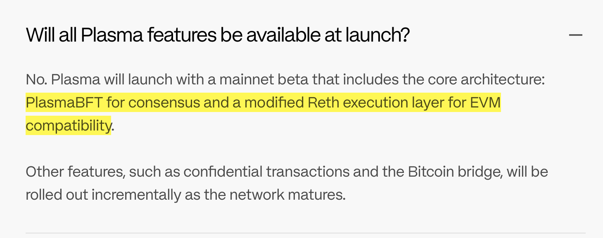
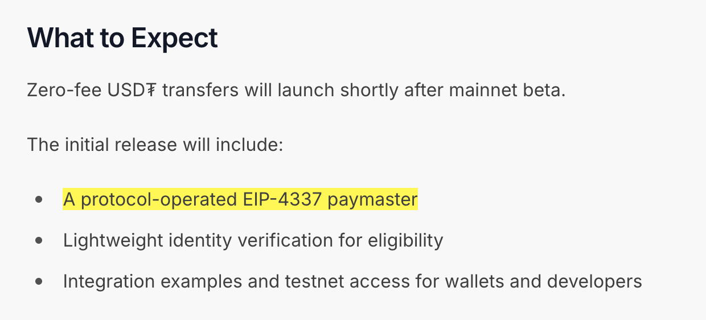

Plasma 的代币是 XPL，这两天正在上各大交易所，最近在 BlockBeats 上的新闻出镜率很高，所以我们来看看 Plasma 到底是一个什么样的项目。
按照我们之前分析项目的套路，在 Plasma 项目的官网首页，我又看到了几个不太乐观的信号：
这两点不是一件小事。再来罗列一下官网首页对 Plasma 这个项目的描述：
现在看到这样的技术指标，我不会猜他是 Cosmos 了，因为我会猜他是 Layer 2，但是他自己又说自己不是 Layer 2，那么 Plasma 的技术方案到底是怎么样的呢？
链架构
魔改 Reth 作为执行层 + PlasmaBFT 作为共识。
魔改 Reth 好理解，PlasmaBFT 目前则没有看到公开的白皮书和代码。
等等，这岂不是 以太坊执行层 + PBFT 共识层的套路？我前几天还刚折腾这个（《一个集成 Geth 和 CometBFT 的兼容层》）。
USDT 零手续费
简单来说，利用 ERC-4337（AA 钱包），估计是把 EntryPoint 合约作为预编译合约放进 Reth 了。
用 Paymaster 来代付手续费，这没什么好说的。
其他
没别的了，就这样吧。